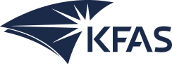

Systematic Evaluation of Passive Back-Support Exoskeletons and Adaptive Workstation Technologies for Reducing Work-Related Musculoskeletal Disorders in Kuwait's Construction Industry
Laboratory trials and live construction-site studies comparing two ergonomic strategies — supporting the worker (passive back-support exoskeletons) versus eliminating the harmful posture itself (an adaptive workstation developed into a Smart Adaptive Lifting Assistant, SALA) — using EMG, IMU posture tracking, AI-based motion analysis, and physiological monitoring under Kuwait's field conditions.
Full abstract
Work-related musculoskeletal disorders (WMSDs) of construction workers are reported to be higher than all other industries combined, with workers experiencing particularly high rates due to repetitive bending, lifting, and awkward postures during manual material handling activities. Statistics show that in Kuwait, back pain represents the most prominent injury with a prevalence of 34.12% across workers. In Kuwait's rapidly expanding construction sector, these injuries result in significant healthcare costs, productivity losses, and workforce sustainability challenges, yet limited research has systematically evaluated ergonomic interventions specifically for construction work environments.
This research proposes a comprehensive study combining controlled laboratory experiments and real-world construction site evaluations to assess the effectiveness of two complementary back-targeted ergonomic interventions: passive back-support exoskeletons (BSEs) and an adaptive workstation concept, implemented as a height-adjustable roller table and further developed into a Smart Adaptive Lifting Assistant (SALA). The two interventions represent fundamentally different ergonomic strategies: supporting the worker bearing the load (exoskeleton) versus eliminating the harmful posture itself (workstation), and will be evaluated individually and in combination. Construction workers will be recruited for controlled trials in laboratory settings simulating realistic manual handling tasks, followed by field validation studies at active construction sites to assess real-world applicability and user acceptance.
Data collection will integrate multiple assessment modalities including electromyography (EMG) sensors for muscle activation analysis, inertial measurement units (IMUs) for posture tracking, video analysis using AI-based motion detection algorithms, heart rate monitoring for physiological stress assessment, and validated survey instruments measuring workload perception, comfort, and technology acceptance. Both quantitative and qualitative data will be analyzed to quantify ergonomic improvements, identify optimal intervention strategies, and evaluate practical implementation challenges under Kuwait's field conditions, including sustained heat exposure.
Expected outcomes include evidence-based guidelines for back-targeted ergonomic intervention selection in construction applications, validated protocols for technology integration, comprehensive cost-benefit analysis for Kuwait's construction industry, and field-tested implementation strategies addressing real-world deployment challenges. This interdisciplinary research, combining engineering, occupational health, automation, robotics, and artificial intelligence approaches, directly supports Kuwait's Vision 2035 human capital development goals while contributing to global knowledge in construction ergonomics and worker safety technology.